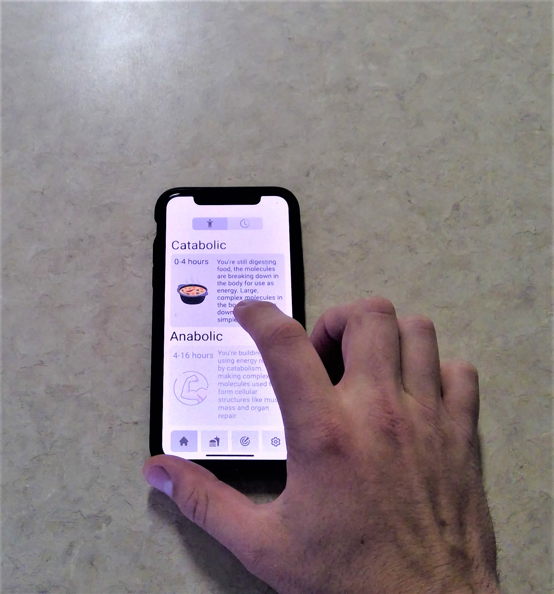
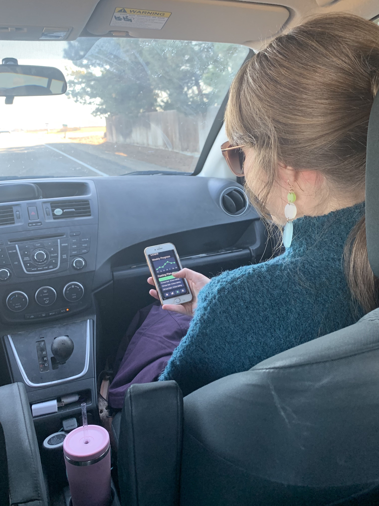
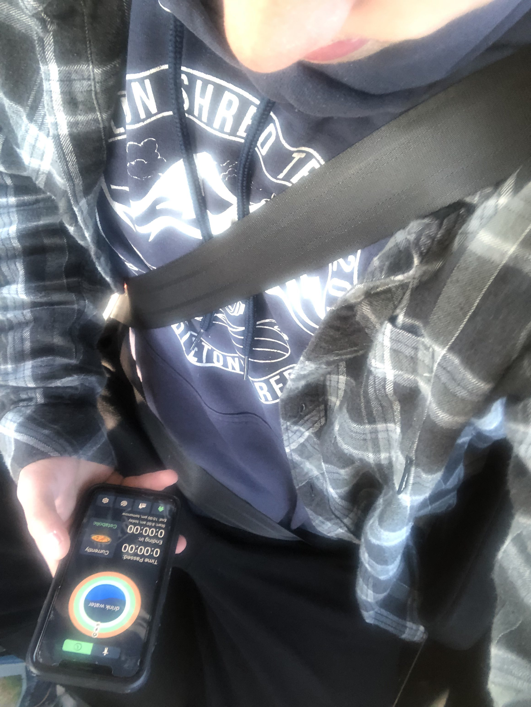
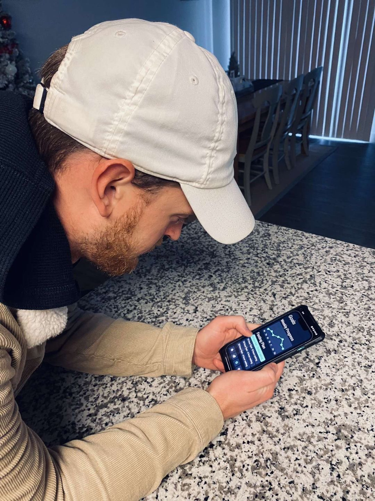

Continued Reading
User testing In-depth
“The best kind of design isn't necessarily an object, a space or a structure: it's a process – dynamic and adaptable.” Don NormanRounds of Usibility Testing
Scenarios
To create my scenarios, I looked at what a regular user would need available when opening the app. I figured that, because of the simplicity of the apps functionality, there would be only a few objectives a user would have in mind when opening the app
-
To start a fasting schedule
This is the main purpose of the app after all.
Check the time left in thier fast
This will possibly the most common scenario, luckily I have a basic home screen that tells you just that so theres no need to load the whole app.
Check where their body process currently is
I really liked the apps that showed their users the medical processes currently taking place while fasting. I found sources explaining the process on a few medical websites such as "https://www.webmd.com/".
End their fast
This will be intuitive along with starting the fast.
Check thier meal plan
This one will take a bit more planning, I have a basic version of what the true meal planner would look like.
-
Scenario 1:
You are looking to shed a fewpounds and decide fasting will help. You need to open the app and start a new fast. from a note card.
- Task: Navigate the initial menu and find the start fast button. set a time and dates for your fasting schedule.
Scenario 2:
You decide that a 14 hour fast isn't long enough for you. You want to change the fasting schedule to 16 hours fasting.
- Task: From the home screen, navigate to the goals menu and change your fasting schedule to the "16 hours fasting 8 hours eating" option.
Scenario 3:
You are finished with your fast, now you want to see what you had planned for your break fast meal.
- Task: From the home menus open the meal planner tab.
-

- 
- 
- 
- 
-
What I learned
User Testing is a crucial step to designing good UX. Anyone can create good looking UI, but making your UI easy to navigate and use is much more of a challenge. This case study has taught me that my idea of easy to use is not the same for pretty much everyone else. Many people stumbled and got lost on my app and I had to make changes as much as I could while still keeping the astetic of the original. I will remember the little things that I gained from testing, things like button size, text labels vs icons, or color visibility. If I can remember the little things from this project then i already have a head start on my next.